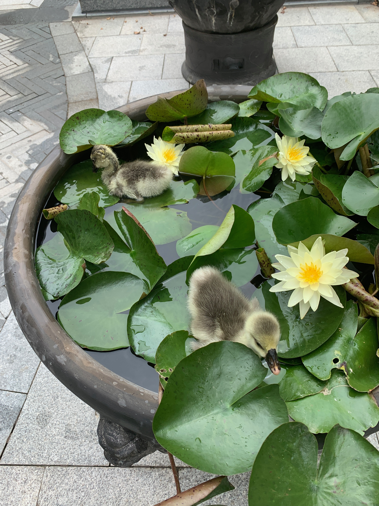
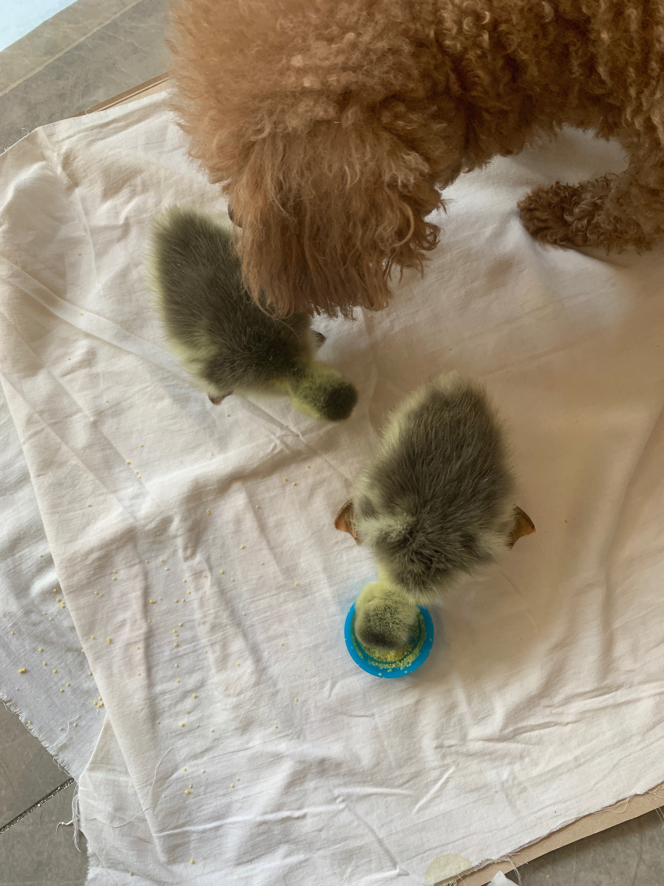
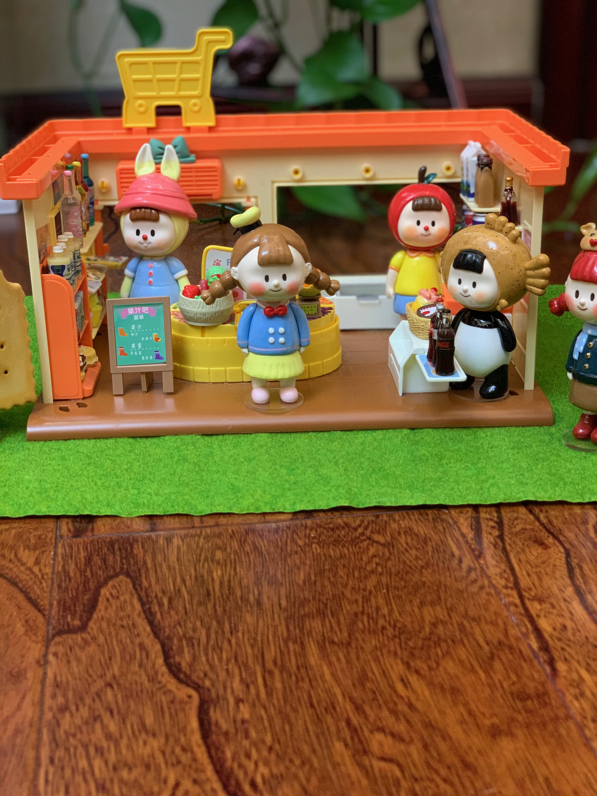
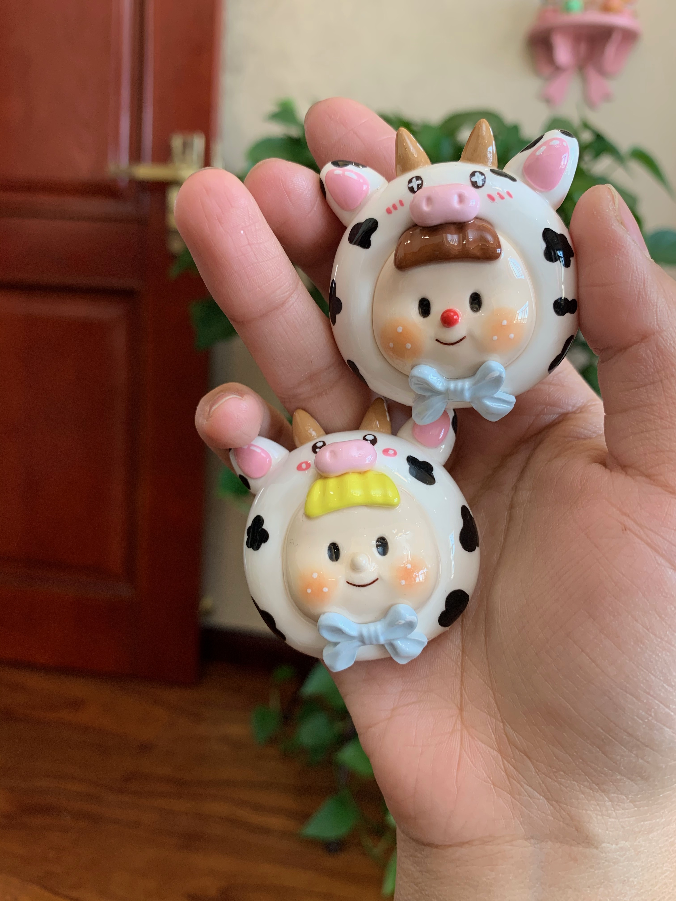
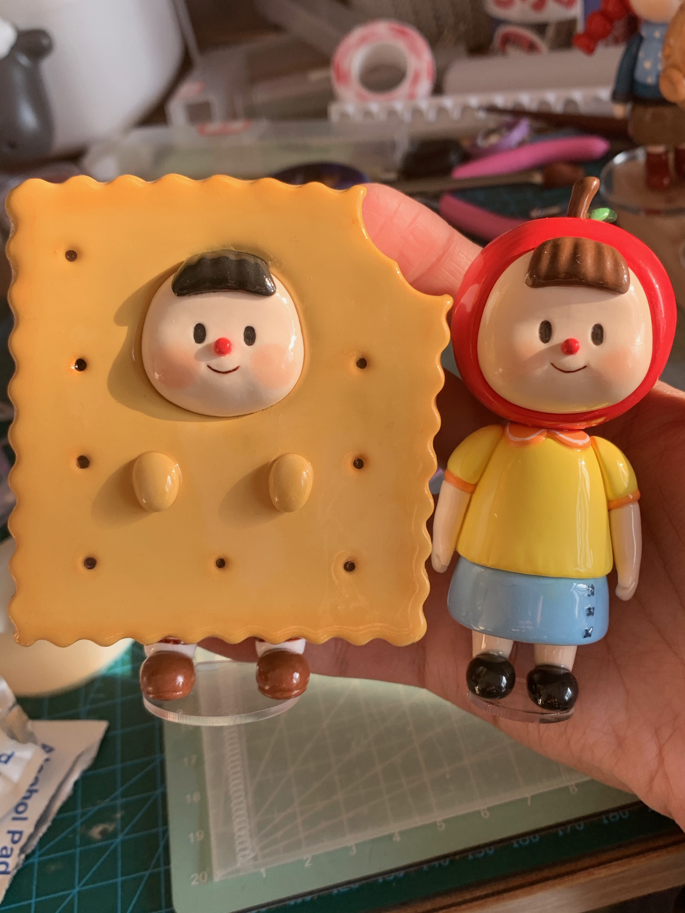
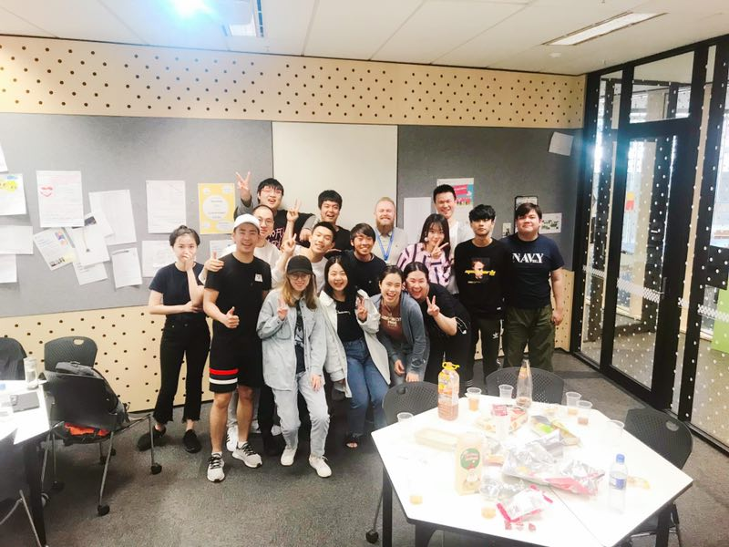
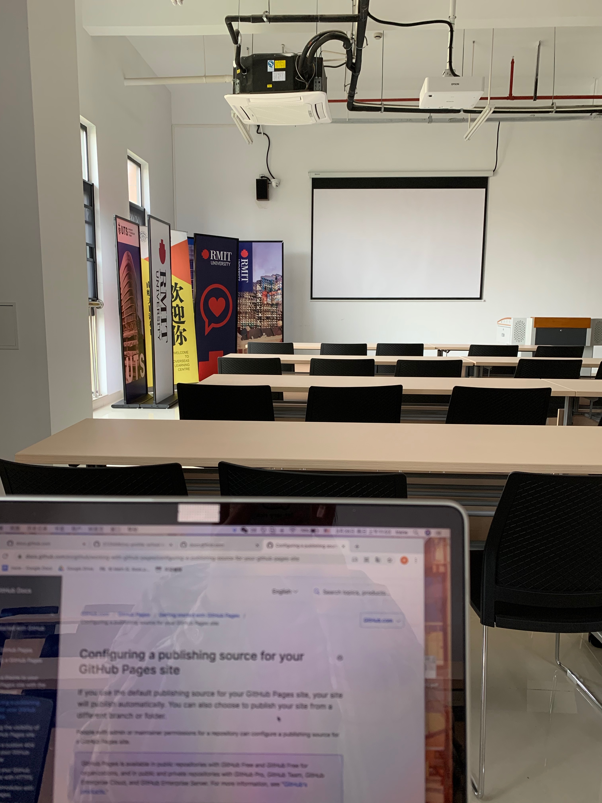
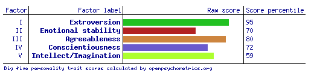

Name: YU JI
Student number: S3725496
Email address: s3725496@student.rmit.edu.au
My name is Yu Ji, But feel free to call me Irene, I prefer for this name. I can speak both Chinese and English. I come from Tianjin, north of China. Tianjin is a beautiful and relaxing coastal city. The local citizens of Tianjin are also known to be humorous and enthusiastic, and because of this their dialect is also known to be chucklesome. Based on this dialect, a language performance culture form called “crosstalk” has also been developed. Crosstalk performance is extremely popular across China as it really entertains the audience.
I've lived in this wonderful city until I graduated from high school (18years old). Being raised in this culture also made me outgoing and enthusiastic. I like experiencing new things and making friends with different characters and Different backgrounds.
I’ve been particularly fond of cute animals since an early age. My parents adopted a little teddy dog for me as a companion dog when I was 12 years old. It has been with our family for more than 9 years and has brought us many happy times. Under our careful care it’s still very healthy and lively even though it’s entered it’s later years. My family runs a family farm, and many times I notice that there are times when animals are born to be forgotten by their mothers, or mothers who have too many chicks to take care of and have to abandon half of them. Hence I often have to manually intervene. I will often foster some of the animals at home. For example, last year, I took care of two newborn ducklings and helped them until they were able to be reunited with their own flock. It brings me great pride and accomplishment.
 I also love to do handywork, especially making clay sculptures. During the pandemic while I was out of school, I tried to remake one of the doll models from Ac Toys(a famous figurine brand). I tried to recreate the PVC figure by using magic clay and following teaching videos on the Internet. The process of molding was very relaxing and enjoyable, and the finished product made me very satisfied and proud. Because I was posting my work on social platforms, I gained more than a thousand followers, and numerous comments and likes. I hope I can design my own brand of fashion toys figurines in the future as a hobby project and use these cute little objects to warm and heal the hearts of busy adults in their spare time.
  After graduating from high school, I decided to study abroad in Melbourne in 2018. I finish my language and foundation year courses at Monash college in the Monash city campus until 2019. Unfortunately, in 2020, the world has experienced the severe impact of COVID-19. I decided to stay in China and take a leave of absence for a year. Now, in 2021, RMIT has launched the OLC program in collaboration with Nanjing University of Aeronautics and Astronautics in China, I am currently taking an online course in Nanjing.
 I hadn't decided what I wanted to major in until I graduated from basic classes. Although I love crafting, I don't plan to make design my college major. Because I don't want to put too much pressure on myself in this hobby, it is mainly for the fun it can bring me. Because I have a personality that is open to exploration and making friends, I decided to choose a major with a broader and more selective range of future development. He better not be easily obsolete in the coming decades and can learn very specialized and unique skills and knowledge. It is better to have some relevance to business, and I want to reach out to more people and develop myself to have more sensitive and high thinking ability.
After the foundation year course, I talked to some friends and overseas study agents and asked their opinions on my choice of major. They said that IT is a good direction for a major, which involves the science thinking of mathematics, but not limited to science, but also includes some thinking directions of analyzing future trends and business. there is a wide range of jobs that can be chosen after IT. After completing my undergraduate studies, I was able to choose the direction that interested me the most as my graduate specialization. For example, I could choose, for my preferences and personality, business data analysis.
In addition, I was very interested in the user requirements and big data analysis and reporting that I needed to learn in the software development process, which gave me the idea to want to study this major. Some people may find the process of learning to program a little boring, but I think it's like I'm doing a craft by putting parts together little by little to form a great piece of work. It would be a very proud thing to do.
I choose RMIT because through a whole year of study in Monash college city campus, I have fallen in love with Melbourne, a city full of freedom and comfort. I also know another university named RMIT in the city center of Melbourne this year. Although RMIT's overall ranking is not as high as Monash's, RMIT is more focused on the practicality of its courses and has a very high local recognition and employment rate. These qualities are very important to me and very attractive to me. In order to learn more practical knowledge and continue to live a convenient life in the city center. So, that’s why I decided to transfer to RMIT.
One more reason I want to learn IT is during the New Crown epidemic, Internet use has increased dramatically. Most of the things people need to do, such as shopping and socializing and learning, can be done online. While brick-and-mortar stores were hit hard, e-commerce, or companies that operate on the Internet, gained more revenue. This terrible experience also made me realize the importance of the Internet and the bright future of the Internet industry, and made me more confident in studying IT.


As the leader of the software development team, I need to have good communication and coordination skills when assigning work. Responsible for the operation of the entire team. Also need to have deep software development programming skills and be able to solve problems encountered while developing software, engineering tasks and product releases. The leader will need to have a variety of skills：
modern programming languages - e.g. Golang, Node.js/JavaScript, Python
cloud computing
concurrent/asynchronous programming techniques
web/HTTP concepts and methodologies
Experience with agile development
Experience as a team lead previously
This position appealed to me because I wanted to challenge myself in a leadership role, and the process of designing a business project and bringing the team to fruition was very exciting. It was also my childhood dream to find a challenging job and to be a successful woman in the workplace. The skills required for this position are proficiency with common programming software, experience with cloud computing, experience with microservices computing, familiarity with open- source tools, proficiency with development software, experience leading teams and excellent communication skills.
The skills I currently possess are minimal as I have no prior experience studying IT. Currently, I have only learned python programming and simple web production, but I have three years left to take related courses. My outgoing personality and love to communicate with others will also bring me more experience in leading teams.
The result I got from 16 personalities type indicator test shows that I am the campaigner (ENFP-T). The characteristic traits are extraverted -59%, intuitive-73%, feeling- 60%, prospecting-51%, turbulent- 57%. I am suitable for the role of a diplomat, for a job where social interaction and human communication is a large part of the job.

The result shows that I am a visual learner, auditory at 25%, Visual at 55% and Tactile at 20%. According to the test I learn by reading or seeing pictures, understand and remember things by sight. That was really true! When I graduated from high school and prepared for the IELTS exam, I realized that I was much better at learning to read English than listening. I could read a word to remember it better than listen it. So, I learn best by using methods that are primarily visual.
The test results showed that I was not low in any of the five shared items (especially the highest scores in extroversion and optimism) but my imagination was the lowest, and I was relatively conservative.
According to the above test, it is indeed very similar to my usual performance. I am a relatively outgoing and like to communicate and share with other people. Ideal for leadership roles and tasks that require communication and analysis with a team. I am caring and sensitive to the emotional changes of others and am also well suited for consulting and service work. However, my imagination and creativity are relatively low. Perhaps I am relatively conservative in my thinking and not bold enough and need to keep learning to improve my confidence and ability in this area.
The project will focus on creating a centralized and targeted workplace social education application, targeting public members who are looking to gain more perspective and advice before entering a field of work, simulations of work environment problems and educating ethical and moral solutions. In order to achieve this, we need to concentrate many experienced veterans and summarize their experiences and advice to create live sessions and record lessons to educate social newcomers about their workplace. Sessions will be divided according to a personality and goal test allowing individuals to find the class that best suits their needs. Professional planners will also help users analyze their advantages and disadvantages within different career paths. There are also free career stimulations that users can use to experience and explore before deciding what path they want to follow.
I Started developing this idea during my high school years; I was contemplating between different career options, uncertain about what profession would best suit me and what my future workplace would look like. I was confused and clueless about what the road ahead looked like. To be honest, I felt the units I studied in high school didn’t help me profession wise. I had no enthusiasm and motivation for the normal high school coursesI wanted to learn some more practical skills that could enhance my ability. I couldn’t stop questioning, why weren't there any organizations that were offering programs teaching practical social work ethics, when we had more than enough resources and technology to create one? Hence, I want to fill this gaping hole in the market myself.
Compared with other mobile education apps, this app has the advantage of being highly targeted and analytical, with concentrated and high-quality educational resources. First of all, it is in the concentration compared with other software, other existing workplace education resources and advertisements on the market are scattered on major websites, social accounts and other mobile apps that do not specialize in producing educational videos. Or they only exist on specialized types of applications, such as English dictionary-type applications with only English education courses. Users with workplace education needs get relatively fragmented and confusing information, and they don't know which is the best and most professional choice.
So, to solve this problem on our software will include most of the most common career courses in the society, we will invite very experienced career veterans in various fields, as well as people who want to do career courses but can't find a suitable platform to develop quality courses on our app. The centralized and targeted quality courses will save users' time of slowly searching and screening courses on other websites and apps. Once the courses are entered, they can be sold repeatedly to achieve once and many times more revenue, and also bring more revenue to the App platform and course instructors.
There are also smaller courses that are not specific to a particular career that can be developed on the platform. For example, we can publish some courses to improve communication skills in the workplace, interpersonal relationship management, image enhancement, photography hobby development, etc. Because some small skillful knowledge will help us to develop better in our respective workplace. But these tips are generally difficult to learn systematically in school and in the workplace. These courses are relatively inexpensive and short, but the rewards can be very surprising.
The second major advantage is that it is highly targeted. Before starting to use the software, users will be asked to take a personality test and a hobby test, and our system will give suggestions to tell them what kind of jobs they are suitable for based on their personality preferences. In addition, there are free experience courses that simulate the workplace environment available. First, it allows users to know more about themselves so that they can choose the workplace course they want to learn most. Of course, we will also have professional career analysts to give more detailed career planning solutions based on the user's personality analysis test results and their preferences. This saves users valuable time of trial and error in life and avoids the painful struggle of being in a job market that is not suitable for them from the very beginning.
I think only individual course learning is not enough. Because it is not an offline physical course, users without a physical learning environment are likely to forget to study on time and their questions may not be solved in time. Therefore, our community and forum operations must be well-served. We will set up two chat groups on WeChat or other social software. One is a learning exchange group, where users who study the same course will gather together to exchange experiences and learn from each other. In the group, a supervisor will be arranged to explain the key knowledge points of the day and answer questions, and three assistants will be arranged to maintain the discipline of the group and remind users to study the course every day. The other group is a banned speaking and material group, users do not need to communicate in the group. The assistants will organize all the knowledge points of the day into a document form in the evening and release it in the banned speaking and material group. It is convenient for users who don't have time to pay attention to the communication group to make up for the lessons in the evening to learn more efficiency. In addition, there will be an open forum on application for all users to communicate on infield issues. Usually, there will be career planners in the group to answer questions. If a user answers a question for them, they will also be rewarded with a coupon that can be used to get a discount on other courses. The platform itself also regularly publishes professional career analysis articles and real-time hot topics on the forum.
Finally, the app will also include a shopping platform to sell some things that may be used in work and study. For example, crafting, which I am good at, involves a lot of scattered material packages. It would really waste a lot of time and energy to spend time to collect, organize and purchase. Our shopping platform will provide tools and materials for careers that require tools, such as those mentioned in crafting courses and baking courses. Books and materials mentioned in other vocational courses can also be purchased on the shopping platform. Likewise, to attract users to shop on the platform instead of going to other shopping platforms, we will offer rewards of shopping points in exchange for course coupons.
Developing a perfect software is not an easy task. It is impossible for one person to accomplish it. Therefore, we needed to find an ideal team to work with. The creation of this mobile application required the collaboration of a product manager, UI designer, interaction designer, development engineer, test engineer, product operation and project manager. Most importantly, for an educational software, we need to find some workplace seniors who have work experience and can record classes for our software. In terms of hardware, I don't know much about it at the moment. But the cost of this can be quite high and requires the establishment of a server room, consisting of server racks, computer servers, routers, etc. to run the software company.
In order to start a software company, we need people who can program first. My current undergraduate major and programming courses will help me a lot in the future. However, according to my personality test analysis. I am passionate and idealistic most of the time. I like to work with people, which requires communication and thinking. So, I prefer to be in charge of development and operations and leave the backend programming and testing to other more professional people. While operating in the front office, I may also develop some craft courses and use my work to help develop my hobby.
If this project is successful, there will be more quality instructors and courses flowing into our platform. More technical support will be needed, and more people will be needed to keep the community and forum running. This also means that the investment and labor cost will get bigger and bigger in the later years. At that time, we will also need more professional accountants to handle the company's finances and business data analysts to help managers make decisions. Although we may face many problems and investment risks in the later stage. But I am still full of expectation for this project. I hope that through this education app, more and more people will realize the importance of learning and also learn any course they are interested in without any restriction of education. Users can enjoy the fun of learning, and the direct result of learning and job and salary improvement is our biggest purpose of this educational software.